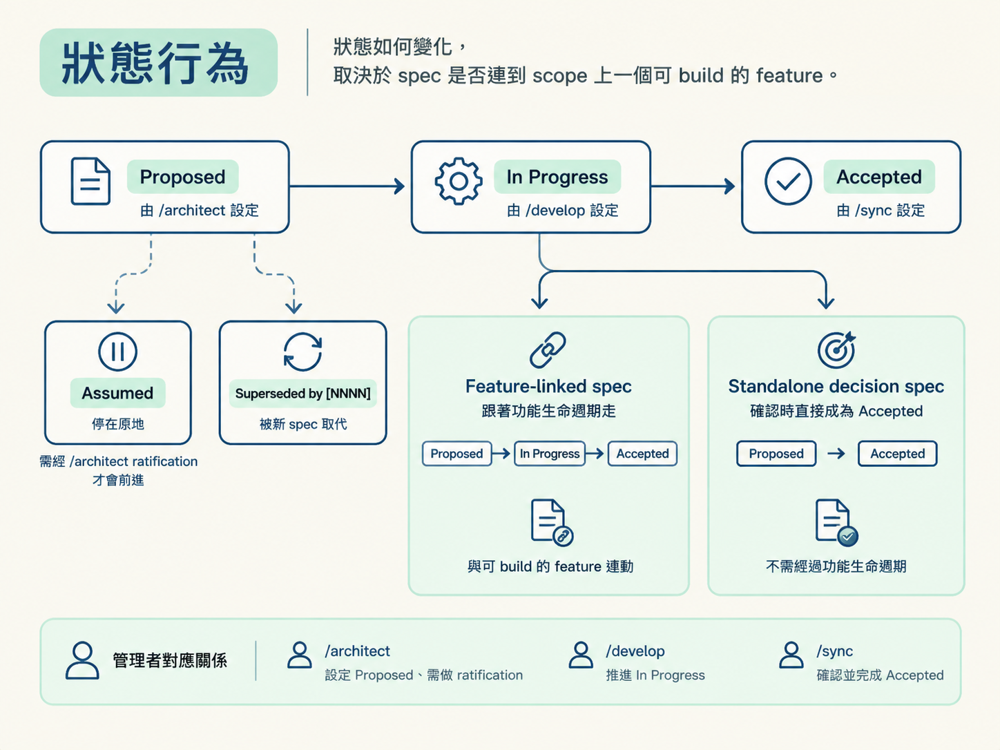

Spec 狀態：標示一份決策目前算數到什麼程度，以及由哪個 skill 負責設定或推進。
打開 spec，看到 **Status**: 這一行，就能對照下表，確認它現在走到哪個階段、由誰管理。
| 狀態 | 意思 | 由誰設定 |
|---|---|---|
Proposed |
spec 已寫好，決定也已談妥，但功能尚未建置。 | /architect 建立時設定 |
In Progress |
這份 spec 管的功能正在建置中。 | /develop 在功能進入 in-progress 時設定 |
Accepted |
功能已建置並完成驗證，scope 為 done。功能出貨前，spec 不會算作 Accepted。 |
/develop 完成時設定，或由 /sync 對帳 |
Superseded by [NNNN] |
這份 spec 已被較新的 spec 取代。 | /architect 取代時標記 |
Assumed |
功能是根據尚未討論的假設建置，並由 /develop 以「先蓋再記」的方式記下。它記錄的是假設，不是正式決策。 |
只有 /develop 會建立；只有 /architect 會清掉 |
Assumed 是唯一不會自動前進的狀態。即使功能已標記為 done，它仍會停在 Assumed，直到 /architect 完成 ratification，通常會改成 Accepted，或將它取代。
狀態會怎麼變，要看 spec 有沒有連到 scope 上一個可 build 的 feature。

feature-linked spec 就是連到 scope 上可 build feature 的 spec，狀態會跟著功能生命週期走：
Proposed → In Progress → Accepted
在對話中確認內容，只是承認內容而已，不會直接把狀態改成 Accepted。狀態會由 /develop 在功能完成時推進。
若 feature-linked spec 的狀態是 Assumed，則不跟著 feature mirror。即使功能已 done，也會停在 Assumed，直到 /architect ratification。
standalone decision spec 沒有連到可 build 的 feature，通常用於基礎架構、技術堆疊或跨領域標準。
這類 spec 建立時是 Proposed，在確認（ratify）時直接變成 Accepted，不經過 feature 的 build 階段。
若 spec 描寫的是已經建置、已經存在的內容，例如走「already built」流程，或 feature 原本就是 existing，它建立時就是 Accepted。
NNNN-<x>/）中，只有 index.md 有 **Status**:。這一行跟著 feature mirror；子 spec 屬於 spec 內容，直接省略狀態行，由傘狀的 index.md 管理。/develop 與 /sync 只推進傘狀的 index.md，不會修改子 spec 的狀態。/architect 撰寫 spec 內容、清掉 Assumed、標記取代；/develop 只修改狀態行；/sync 負責對帳，並標出陳舊的 spec。# 0007 · add-email-reminders
**Status**: Proposed ← /architect 寫下，功能還沒蓋
**Status**: In Progress ← /develop 開始蓋
**Status**: Accepted ← 功能驗證測試完成，收工
# 若中途先蓋、未討論：
**Status**: Assumed ← /develop 先記下
**Status**: In Progress ← /architect ratification 後，補齊內容並清掉 Assumed
**Status**: Accepted ← /develop 收尾/architect 的內容。Assumed 如何補成正式決策：回看 Step 4「Ratification」。一份 spec 的
**Status**:行，表示這份決策目前算數到什麼程度。/architect建立Proposed、清掉Assumed、標記Superseded；/develop推進In Progress到Accepted；/sync負責對帳。Feature-linked spec 跟著功能走，standalone decision spec 在確認時直接成為Accepted，已經建置工作的 spec 則一建立就是Accepted。Assumed會停在原地，直到完成 ratification 或被取代。